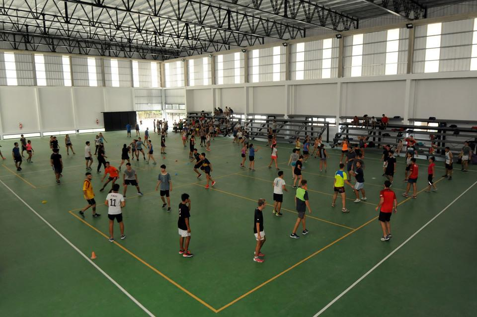

ESCUELA DE EDUCACIÓN SECUNDARIA TÉCNICA N°7.
TALLER REGIONAL QUILMES.

La Escuela de Educación Secundaria Técnica N° 7 “TALLER REGIONAL QUILMES” funciona en jurisdicción del Área de Material Quilmes, dependiente de la Fuerza Aérea Argentina, comenzó su actividad en marzo de 1957 como Escuela de Aprendices Operarios desarrollando cursos regulares hasta el 31 de diciembre de 1963.
La Escuela tiene como función la de formar técnicos preparados para desempeñarse como mandos medios capaces de ejercer la representación técnica, en el área de la tecnología aeroespacial, en dos especialidades la Aeronáutica y la Aviónica. Al ser una escuela secundaria, dos funciones más posee bajo su responsabilidad, la de formar personas – profesionales de bien, capaces de ejercer su condición de ciudadanos responsables y la función propedéutica, preparando a sus alumnos para afrontar sin dificultad estudios superiores.
El establecimiento cuenta con cuatro edificios principales, sitos en el predio del Área Material Quilmes, perteneciente a la Fuerza Aérea Argentina. Dos de los edificios principales están destinados para las tecnicaturas de Aeronáutica y Aviónica respectivamente. En el tercer Edificio principal donde se encuentran las aulas de materias de formación general y científico tecnológicas. Por último, se tiene un cuarto edificio principal destinado a la formación científico tecnológico del Ciclo Básico. Cada edifico cuenta con el equipamiento acorde a la actividad realizada, y el personal especializado de acuerdo a los Perfiles. Por otra parte, la Escuela posee un extenso campo de deportes, en el cual los alumnos realizan su actividad física. Asimismo, la Escuela cuenta con un comedor para 950 alumnos distribuidos en dos turnos, y un buffet saludable que provee a los alumnos de entremeses para las horas de clase. La superficie edificada es de 8050 m2.
UNIVERSIDAD NACIONAL DE LA PLATA.
FACULTAD DE HUMANIDADES Y CIENCIAS DE LA EDUCACIÓN.

La Facultad de Humanidades, una de las primeras unidades académicas de la UNLP, tuvo problemas edilicios casi desde el momeneto de su creación, hace cien años, en 1914. Funcionó primero en el edificio del Rectorado de la Universidad, en lo que fuera el Banco Hipotecario en el momento de la fundación de la ciudad de La Plata en 1882. Tiempo después, cuando se decidió la construcción del edificio Tres Facultades, en 1967, durante esa dictadura que se autodenominó la Revolución Argentina, la Facultad quedó atrapada en una mole que fue calificada como bestial por arquitectos y urbanistas, que no sólo resultaba insuficiente, sino también insegura, disfuncional e inadecuada. A pesar de todo esto, allí estuvimos durante más de 35 años. Y allí funcionó también la Facultad de Psicología cuando fue creada como desprendimiento de la Facultad de Humanidades en el año 2006.
Finalmente, en los primeros meses de 2014, la Facultad se mudó a un nuevo emplazamiento que, por primera vez, se encuentra fuera del radio de la ciudad de La Plata, más exactamente en el barrio de El Dique del partido de Ensenada. Se trata de un complejo de tres edificios, en un predio de 9 hectáreas compartidas, por el momento, con la Facultad de Psicología, y que en el futuro compartiremos también con la Casa de la Memoria de Ensenada.
La Universidad Nacional de La Plata inauguró en 2017 las nuevas instalaciones deportivas del Departamento de Educación Física de la Facultad de Humanidades y Ciencias de la Educación. Se trata de más de 2 hectáreas emplazadas en el predio del ex BIM III, que conforman un mega centro deportivo y recreativo para la formación y capacitación de todos los estudiantes de las carreras de Profesorado y Licenciatura en Educación Física.
El flamante complejo incluye un enorme espacio Polideportivo con gradas con capacidad para más de 600 personas (foto), al que se suma otro gran Gimnasio totalmente equipado. Además cuenta con playón para actividades al aire libre, una cancha de fútbol, vestuarios y depósitos. Pero sin dudas, la verdadera estrella del predio es la pileta semi olímpica climatizada y cubierta.